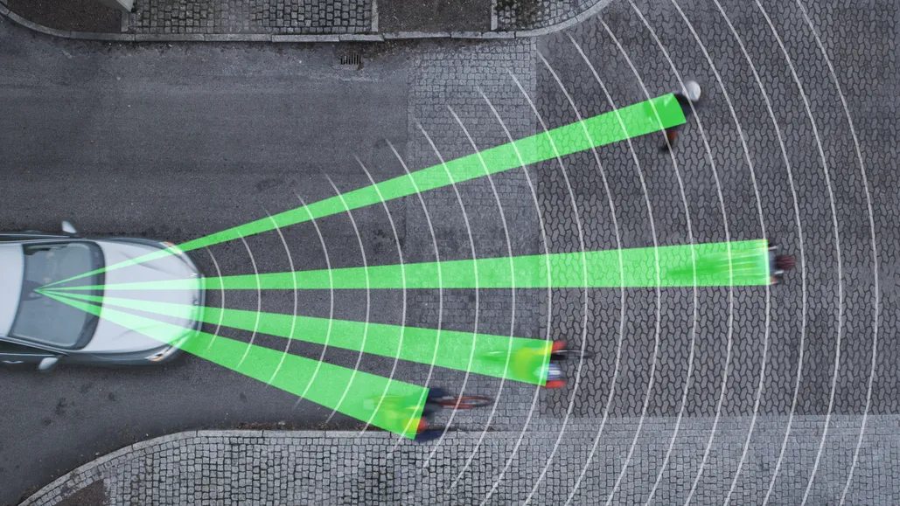
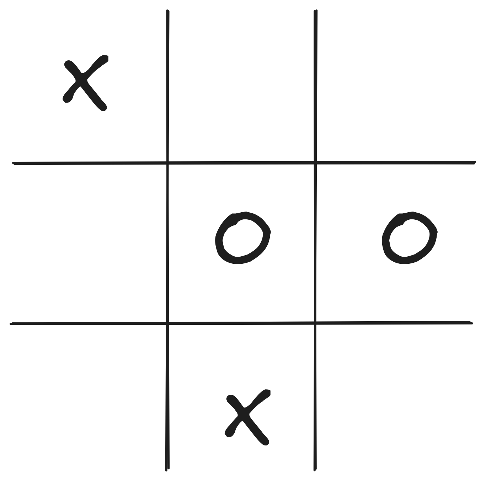
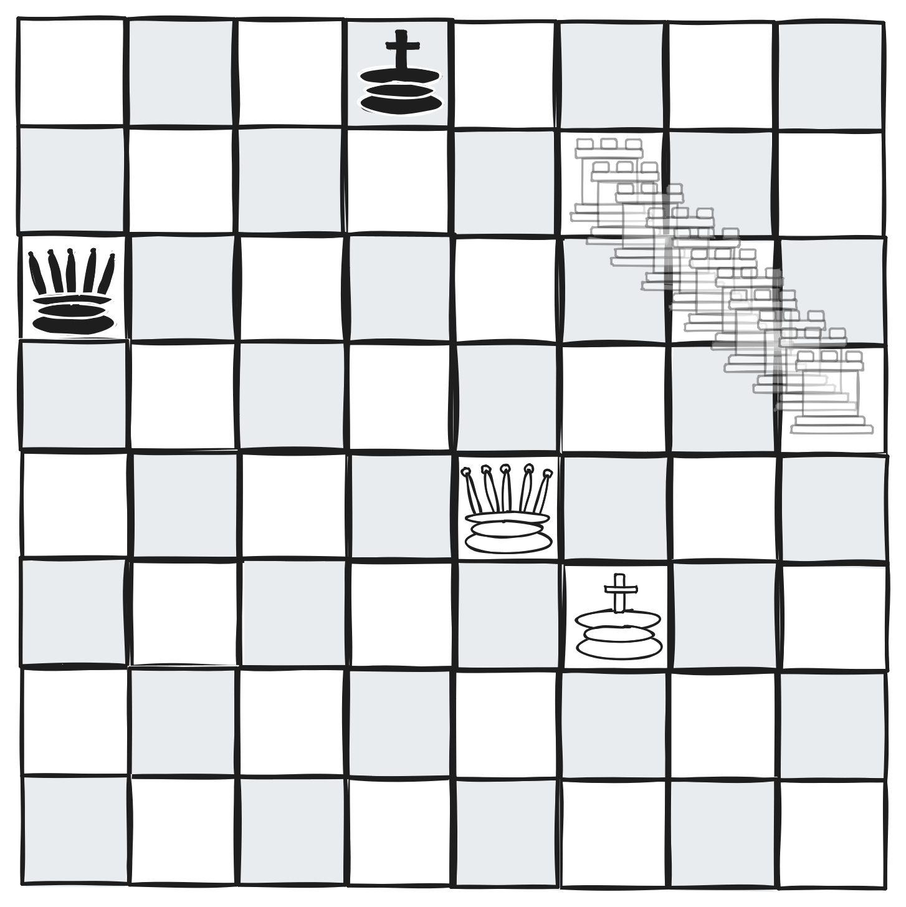

CSCI 4511/6511
Midterm Exam: 16 October
Final Exam: 4 Dec
Arrange to be present for both exams.
Optional
Recommended
Assumed
Office Hours
Your code will almost certainly show up on your exam.
If nobody wrote it, why should anybody read it?
Stuart J. Russell and Peter Norvig. Artificial Intelligence: A Modern Approach. 4th Edition, 2020.
Several copies will be on reserve at the GWU Library.
One 2.5 hr meeting per week
Exams in person
Homework via submit server
Programming assignments in Python
Rhythms
What is intelligence?
Do we need all three?
Does “AI” need all three?

It is possible to make better decisions.
Rational agents make better decisions.
Which would you prefer?
Thought “vs.” Action
Human “vs.” Rational
What is necessary?
How do “we” ensure AI values align with human values?
This is an open area of investigation.1
What is in between sensors and actuators?
The agent function.


Features of the problem are pre-defined; we define the agent function.
Note that Bandai Namco Entertainment Inc. owns the trademark to “PAC-MAN” for Coin and Non-Coin Operated Electronic Amusement Apparatus for Playing a Game on a Video Output Display, as well as for Entertainment, namely providing a computer game that may be accessed network-wide by network users via mobile phones and computers; providing computer games via network between communications networks and computers. Our use is educational.
Examples…
Stuart J. Russell and Peter Norvig. Artificial Intelligence: A Modern Approach. 4th Edition, 2020.
Stanford CS231
UC Berkeley CS188